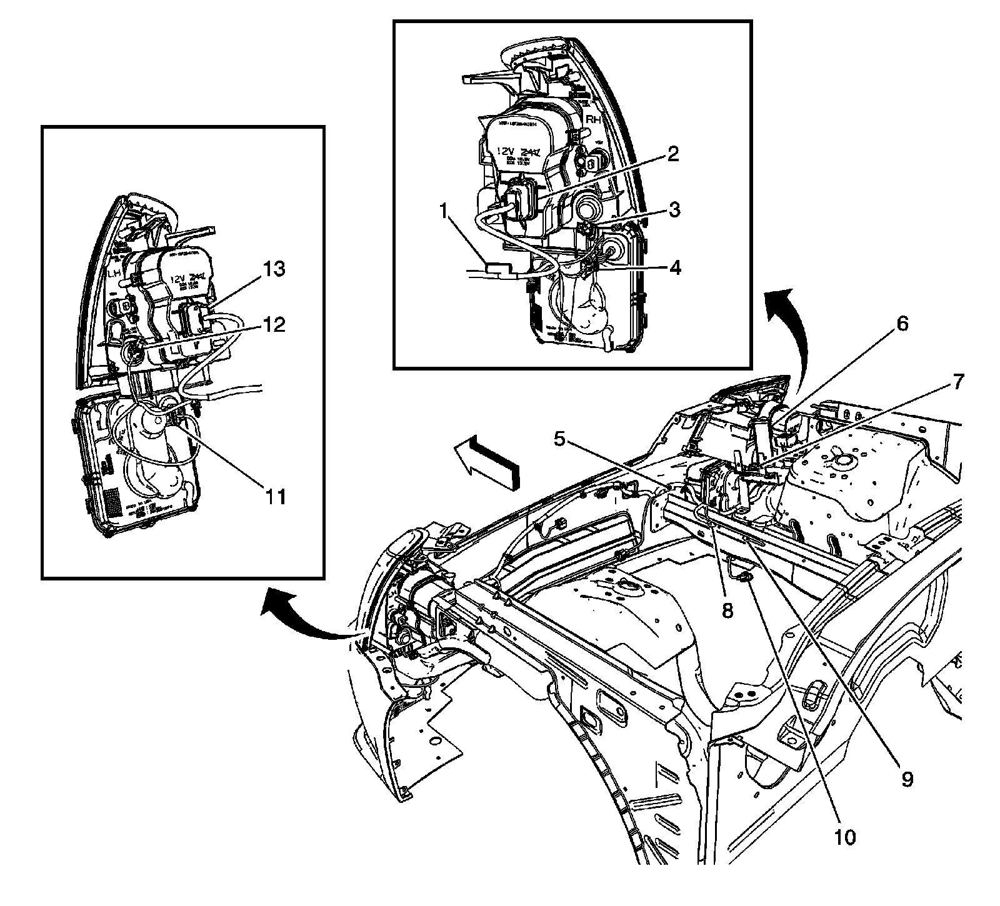

RHD
Harness Routing Views (RHD)
Forward Lamp Harness

1 - J104 (TR7)
2 - X112
3 - X114 (T90)
4 - X109
5 - J105 (K14)
6 - Fuse Block - Underhood Bracket
7 - X116
8 - G104
9 - G110 (LH2 - Gas, 8 Cylinder, 4.6L, SFI, V8, DOHC, HO)
10 - X113 (LH2 - Gas, 8 Cylinder, 4.6L, SFI, V8, DOHC, HO)
11 - X110
12 - X115 (T90)
13 - X111